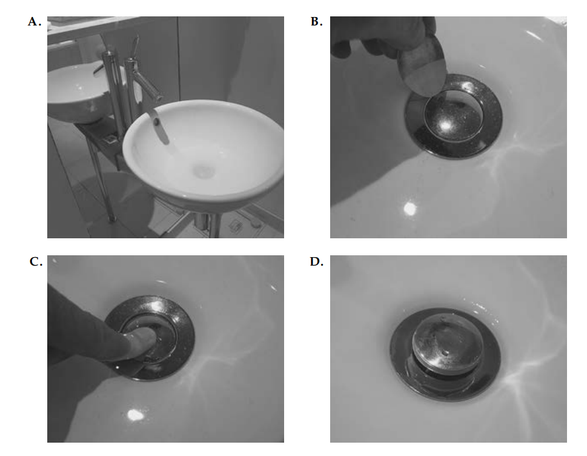
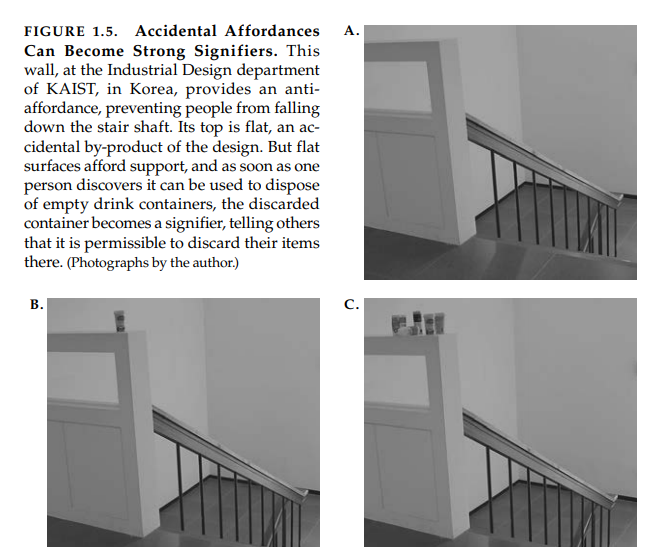
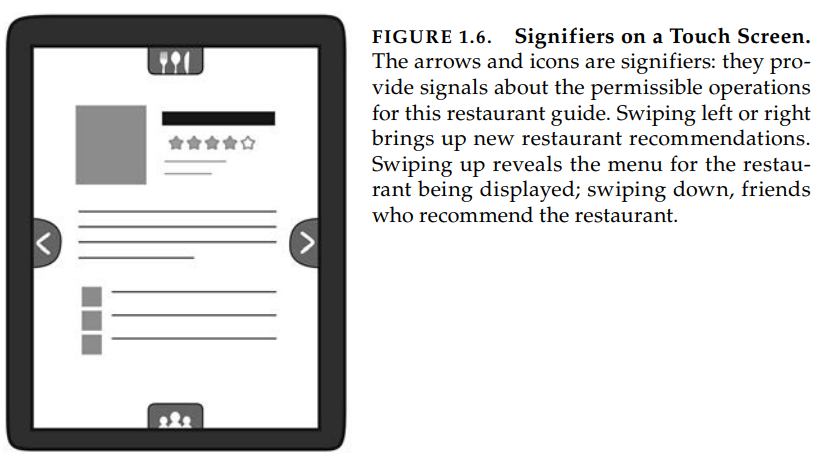

Aula8
Fundamental Principles of Interaction
Great designers produce pleasurable experiences. Experience: note the word. Engineers tend not to like it; it is too subjective.
Experience is critical, for it determines how fondly people remember their interactions. Was the overall experience positive, or was it frustrating and confusing? When our home technology behaves in an uninterpretable fashion we can become confused, frustrated, and even angry—all strong negative emotions. When there is understanding it can lead to a feeling of control, of mastery, and of satisfaction or even pride—all strong positive emotions. Cognition and emotion are tightly intertwined, which means that the designers must design with both in mind.
When we interact with a product, we need to figure out how to work it. This means discovering what it does, how it works, and what operations are possible: discoverability. Discoverability results from appropriate application of five fundamental psychological concepts covered in the next few chapters: affordances, signifiers, constraints, mappings, and feedback. But there is a sixth principle, perhaps most important of all: the conceptual model of the system. It is the conceptual model that provides true understanding. So I now turn to these fundamental principles, starting with affordances, signifiers, mappings, and feedback, then moving to conceptual models.
Affordances
We live in a world filled with objects, many natural, the rest artificial. Every day we encounter thousands of objects, many of them new to us. Many of the new objects are similar to ones we already know, but many are unique, yet we manage quite well. How do we do this? Why is it that when we encounter many unusual natural objects, we know how to interact with them? Why is this true with many of the artificial, human-made objects we encounter? The answer lies with a few basic principles. Some of the most important of these principles come from a consideration of affordances.
The term affordance refers to the relationship between a physical object and a person (or for that matter, any interacting agent, whether animal or human, or even machines and robots). An affordance is a relationship between the properties of an object and the capabilities of the agent that determine just how the object could possibly be used. A chair affords (“is for”) support and, therefore, affords sitting. Most chairs can also be carried by a single person (they afford lifting), but some can only be lifted by a strong person or by a team of people. If young or relatively weak people cannot lift a chair, then for these people, the chair does not have that affordance, it does not afford lifting.
The presence of an affordance is jointly determined by the qualities of the object and the abilities of the agent that is interacting. We are used to thinking that properties are associated with objects. But affordance is not a property. An affordance is a relationship. Whether an affordance exists depends upon the properties of both the object and the agent.
Glass affords transparency. At the same time, its physical structure blocks the passage of most physical objects. As a result, glass affords seeing through and support, but not the passage of air or most physical objects (atomic particles can pass through glass). The blockage of passage can be considered an anti-affordance—the prevention of interaction. To be effective, affordances and antiaffordances have to be discoverable—perceivable. This poses a difficulty with glass. The reason we like glass is its relative invisibility, but this aspect, so useful in the normal window, also hides its anti-affordance property of blocking passage. As a result, birds often try to fly through windows. And every year, numerous people injure themselves when they walk (or run) through closed glass doors or large picture windows. If an affordance or anti-affordance cannot be perceived, some means of signaling its presence is required: I call this property a signifier.
Affordances exist even if they are not visible. For designers, their visibility is critical: visible affordances provide strong clues to the operations of things. A flat plate mounted on a door affords pushing. Knobs afford turning, pushing, and pulling. Perceived affordances help people figure out what actions are possible without the need for labels or instructions. I call the signaling component of affordances signifiers.
Many people find affordances difficult to understand because they are relationships, not properties. Designers deal with fixed properties, so there is a temptation to say that the property is an affordance.
SIGNIFIERS
Designers have practical problems. They need to know how to design things to make them understandable. They soon discovered that when working with the graphical designs for electronic displays, they needed a way to designate which parts could be touched, slid upward, downward, or sideways, or tapped upon. The actions could be done with a mouse, stylus, or fingers. Some systems responded to body motions, gestures, and spoken words, with no touching of any physical device. How could designers describe what they were doing? There was no word that fit, so they took the closest existing word—affordance. Soon designers were saying such things as, “I put an affordance there,” to describe why they displayed a circle on a screen to indicate where the person should touch, whether by mouse or by finger. “No,” I said, “that is not an affordance. That is a way of communicating where the touch should be. You are communicating where to do the touching: the affordance of touching exists on the entire screen: you are trying to signify where the touch should take place. That’s not the same thing as saying what action is possible.”
I decided to provide a better answer: signifiers. Affordances determine what actions are possible. Signifiers communicate where the action should take place. We need both.
People need some way of understanding the product or service they wish to use, some sign of what it is for, what is happening, and what the alternative actions are. People search for clues, for any sign that might help them cope and understand. It is the sign that is important, anything that might signify meaningful information. Designers need to provide these clues. What people need, and what designers must provide, are signifiers.
The term signifier has had a long and illustrious career in the exotic field of semiotics, the study of signs and symbols. But just as I appropriated affordance to use in design in a manner somewhat different than its inventor had intended, I use signifier in a somewhat different way than it is used in semiotics. For me, the term signifier refers to any mark or sound, any perceivable indicator that communicates appropriate behavior to a person.
Signifiers can be deliberate and intentional, such as the sign push on a door, but they may also be accidental and unintentional, such as our use of the visible trail made by previous people walking through a field or over a snow-covered terrain to determine the best path. Or how we might use the presence or absence of people waiting at a train station to determine whether we have missed the train.

FIGURE 1.2. Problem Doors: Signifiers Are Needed. Door hardware can signal whether to push or pull without signs, but the hardware of the two doors in the upper photo, A, are identical even though one should be pushed, the other pulled. The flat, ribbed horizontal bar has the obvious perceived affordance of pushing, but as the signs indicate, the door on the left is to be pulled, the one on the right is to be pushed. In the bottom pair of photos, B and C, there are no visible signifiers or affordances. How does one know which side to push? Trial and error. When external signifiers—signs— have to be added to something as simple as a door, it indicates bad design.
Consider a bookmark, a deliberately placed signifier of one’s place in reading a book. But the physical nature of books also makes a bookmark an accidental signifier, for its placement also indicates how much of the book remains. Most readers have learned to use this accidental signifier to aid in their enjoyment of the reading. With few pages left, we know the end is near. Electronic book readers do not have the physical structure of paper books, so unless the software designer deliberately provides a clue, they do not convey any signal about the amount of text remaining. -> Isto indica experiências diferentes com livros físicos e eletrônicos (ebooks)

FIGURE 1.3. Sliding Doors: Seldom Done Well. Sliding doors are seldom signified properly. The top two photographs show the sliding door to the toilet on an Amtrak train in the United States. The handle clearly signifies “pull,” but in fact, it needs to be rotated and the door slid to the right. The owner of the store in Shanghai, China, Photo C, solved the problem with a sign. “don’t push!” it says, in both English and Chinese. Amtrak’s toilet door could have used a similar kind of sign.

FIGURE 1.4. The Sink That Would Not Drain: Where Signifiers Fail. I washed my hands in my hotel sink in London, but then, as shown in Photo A, was left with the question of how to empty the sink of the dirty water. I searched all over for a control: none. I tried prying open the sink stopper with a spoon (Photo B): failure. I finally left my hotel room and went to the front desk to ask for instructions. (Yes, I actually did.) “Push down on the stopper,” I was told. Yes, it worked (Photos C and D). But how was anyone to ever discover this? And why should I have to put my clean hands back into the dirty water to empty the sink? The problem here is not just the lack of signifier, it is the faulty decision to produce a stopper that requires people to dirty their clean hands to use it.
Affordances represent the possibilities in the world for how an agent (a person, animal, or machine) can interact with something. Some affordances are perceivable, others are invisible. Signifiers are signals. Some signifiers are signs, labels, and drawings placed in the world, such as the signs labeled “push,” “pull,” or “exit” on doors, or arrows and diagrams indicating what is to be acted upon or in which direction to gesture, or other instructions.

- Affordances are the possible interactions between people and the environment. Some affordances are perceivable, others are not;
- Perceived affordances often act as signifiers, but they can be ambiguous;
- Signifiers signal things, in particular what actions are possible and how they should be done. Signifiers must be perceivable, else they fail to function.
Because affordances and signifiers are fundamentally important principles of good design, they show up frequently in the pages of this book. Whenever you see hand-lettered signs pasted on doors, switches, or products, trying to explain how to work them, what to do and what not to do, you are also looking at poor design.

Mapping
Mapping is a technical term, borrowed from mathematics, meaning the relationship between the elements of two sets of things.
Mapping is an important concept in the design and layout of controls and displays. When the mapping uses spatial correspondence between the layout of the controls and the devices being controlled, it is easy to determine how to use them. In steering a car, we rotate the steering wheel clockwise to cause the car to turn right: the top of the wheel moves in the same direction as the car. Note that other choices could have been made. In early cars, steering was controlled by a variety of devices, including tillers, handlebars, and reins.
All of these mappings for the control of vehicles work because each has a compelling conceptual model of how the operation of the control affects the vehicle. The relationship between a control and its results is easiest to learn wherever there is an understandable mapping between the controls, the actions, and the intended result.
Natural mapping, by which I mean taking advantage of spatial analogies, leads to immediate understanding. For example, to move an object up, move the control up. Some natural mappings are cultural or biological, as in the universal standard that moving the hand up signifies more, moving it down signifies less, which is why it is appropriate to use vertical position to represent intensity or amount. Other natural mappings follow from the principles of perception and allow for the natural grouping or patterning of controls and feedback. Groupings and proximity are important principles from Gestalt psychology that can be used to map controls to function: related controls should be grouped together. Controls should be close to the item being controlled.
Note that there are many mappings that feel “natural” but in fact are specific to a particular culture: what is natural for one culture is not necessarily natural for another.

FEEDBACK
Feedback—communicating the results of an action—is a well known concept from the science of control and information theory. Imagine trying to hit a target with a ball when you cannot see the target. Even as simple a task as picking up a glass with the hand requires feedback to aim the hand properly, to grasp the glass, and to lift it. The human nervous system is equipped with numerous feedback mechanisms, including visual, auditory, and touch sensors, as well as vestibular and proprioceptive systems that monitor body position and muscle and limb movements. Given the importance of feedback, it is amazing how many products ignore it.
Feedback must be immediate: even a delay of a tenth of a second can be disconcerting. If the delay is too long, people often give up, going off to do other activities. e. Feedback must also be informative. e. Poor feedback can be worse than no feedback at all, because it is distracting, uninformative, and in many cases irritating and anxiety-provoking.
Too much feedback can be even more annoying than too little. But worst of all is inappropriate, uninterpretable feedback. Too many announcements cause people to ignore all of them, or wherever possible, disable all of them, which means that critical and important ones are apt to be missed.
Poor design of feedback can be the result of decisions aimed at reducing costs, even if they make life more difficult for people.
Feedback has to be planned. All actions need to be confirmed, but in a manner that is unobtrusive. Feedback must also be prioritized, so that unimportant information is presented in an unobtrusive fashion, but important signals are presented in a way that does capture attention. When there are major emergencies, then even important signals have to be prioritized. All can become confusing, irritating, and lifeendangering places because of excessive feedback, excessive alarms, and incompatible message coding. Feedback is essential, but it has to be done correctly. Appropriately.
CONCEPTUAL MODELS
A conceptual model is an explanation, usually highly simplified, of how something works.
Agradecimentos
Fabrício de Moraes - UX Designer / User Interface Designer
Referências
Livro: The Design of Everyday Things (Cap1)